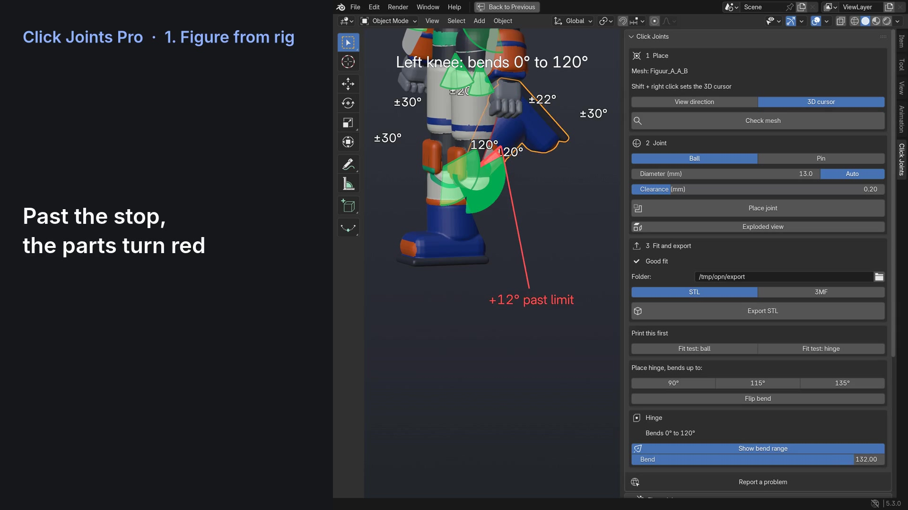
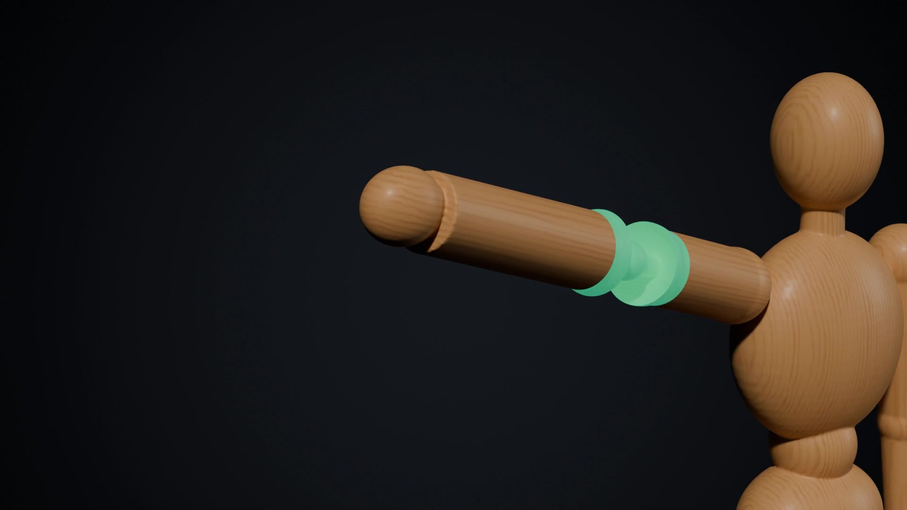

Press kit · Click Joints Pro for Blender
Reads your rig, stops where your rig stops.
Click Joints Pro is a Blender add-on that turns a rigged figure into 3D printable parts with one button. It reads the armature and puts a hinge with an end stop at every elbow and knee, and a ball joint at shoulders, hips and neck. The end stop comes from the rig itself, and Blender shows the bend range at each joint before you print, with the parts in red past the stop.
Free to use in videos, articles and posts about Click Joints. No need to ask.
Clips
Screen recordings in Blender 5.3 with Click Joints Pro. MP4, 1920 x 1080, 30 fps, no sound, captions on the left.
Download MP4 (0.5 MB)
Download MP4 (0.9 MB)
Download MP4 (2.0 MB)
Images
JPG, 1920 x 1080.

Download JPG


Download JPG

Facts
- What it is: a Blender add-on for people who 3D print poseable figures, dolls and props.
- Figure from rig: one button reads the armature. Hinges with an end stop at elbows and knees, ball joints at shoulders, hips and neck.
- The end stop comes from the rig: a Limit Rotation constraint sets the angle. No limit gives a preset per body part.
- Common bone names: Rigify, Mixamo, Auto-Rig Pro, Unreal, Character Creator, VRoid, Biped and Daz.
- Export: one STL or 3MF per part, in millimetres.
- Price on Superhive: personal license $12, studio license for up to 5 people $45. A free version, Click Joints, is on Blender Extensions.
What it does not do
- Bend ranges are measured in Blender, not on a printer. Print the small fit test first to find the right clearance for your printer.
- Works best on figures of about 200 mm or taller with separate arms and legs, in Blender 4.5 or newer.
- Ankles need Blender 5.2 or newer. A joint that does not fit is skipped, with the reason shown, instead of a broken part.
- The free Click Joints and Pro cannot be enabled at the same time.
Questions: see support on the product page.